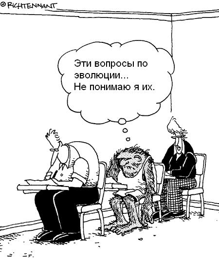
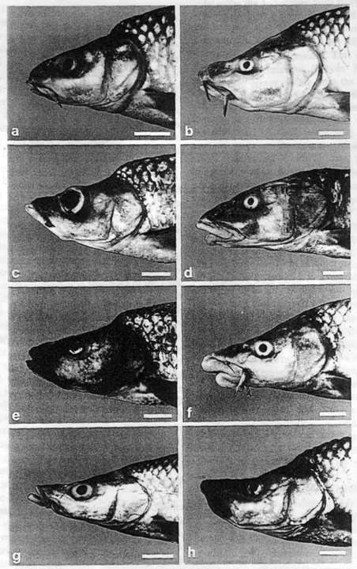

10. Ответы на некоторые типичные "доводы" антиэволюционистов

Чрезвычайно подробный перечень утверждений антиэволюционистов и весьма обстоятельные научные ответы на них опубликованы на сайте TalkOrigins (по-английски). Многие "аргументы" противников эволюции рассмотрены в предыдущих разделах (они выделены вот таким шрифтом). В данном разделе мы поместили ряд дополнительных материалов, показывающих несостоятельность антиэволюционистской аргументации.
Содержание раздела:
- Почему "кембрийский взрыв" не является аргументом против эволюции.
- Эволюция, случайность, энтропия, или Как Дарвин и Клаузиус оказались правыми одновременно (статья Н.М.Борисова, объясняющая несостоятельность утверждений антиэволюционистов о том, что эволюция якобы противоречит второму началу термодинамики).
- Проставляем даты на геологической летописи, или Как физики геологам помогают (статья Н.М.Борисова, объясняющая несостоятельность утверждений антиэволюционистов-"младоземельщиков" о том, что
- Говорят, что эволюция – это теория. С каких пор она стала фактом?
- Правда ли, что «Дарвин устарел»?
- Опровергает ли эволюционную теорию «кошмар Дженкина»?
- Существуют ли внутренние противоречия в теории эволюции?
- Есть ли факты, опровергающие эволюционную теорию?
- Правда ли, что теория эволюции не получила достаточных подтверждений?
- Почему наследственная информация совершенствуется и возрастает в объеме, а не портится в результате мутаций?
- Как могли "из ничего" возникнуть такие сложные органы, как глаз? Правда ли, что эти органы совершенны?
- Можно ли наблюдать эволюцию?
- Правда ли, что люди не вывели ни одного нового вида?
- Хватает ли времени для эволюции наблюдаемых сегодня форм естественным путем?
- Правда ли, что для того, чтобы методом случайного перебора всех возможных вариантов создать сложную биологическую молекулу (например, белка гемоглобина), не хватило бы всего времени существования Вселенной?
- Правда ли, что естественным отбором нельзя объяснить возникновение полового размножения?
- Почему обезьяны сейчас не превращаются в людей?
- Действует ли в научных кругах запрет на критику эволюционной теории?
- Являются ли антиэволюционизм (креационизм) и его разновидность – "теория разумного замысла" ("intelligent design") наукой?
- Думают ли животные?
- Совместимы ли теория эволюции и христианство?
- Правда ли, что Дарвин перед смертью отрекся от своих взглядов?
- Почему у эволюционистов всегда такой высокомерный тон, почему они так неуважительно отзываются о своих оппонентах - антиэволюционистах? Это - нарушение научной этики!
- Почему авторы этой публикации ссылаются на Ричарда Докинза - ведь всем известно, что это очень "попсовый" автор, и к тому же воинствующий атеист?
- Что такое "полистраты"?
Почему "кембрийский взрыв" не является аргументом против эволюции
Многие крупные таксоны (типы и классы) современных животных впервые появляются в палеонтологической летописи в течение сравнительно короткого интервала времени в начале кембрийского периода (примерно 542 - 530 млн лет назад), то есть в геологическом масштабе времени - почти мгновенно. Антиэволюционисты иногда пытаются использовать этот факт в качестве аргумента против эволюции: дескать, он противоречит дарвиновским представлениям о постепенности эволюционного процесса, и непонятно, где же предки всех этих животных. Самому Дарвину "кембрийский взрыв" представлялся загадкой, которую его теория не могла объяснить. Усилиями последующих поколений биологов и палеонтологов эта загадка была в общих чертах разгадана. Популярный и подробный рассказ о новейших находках, современных фактах и теориях, объясняющих "кембрийский взрыв", читатель найдет в работах авторов настоящего материала:
А.Ю.Журавлев. Тени зарытых предков
К.Ю.Еськов. История Земли и жизни на ней. Глава 7.
|  |
| Усачи озера Тана |
По своему строению многие из этих новых форм вполне заслуживают не только видового, но и родового статуса, однако по генетике они все очень близки, как им и положено, учитывая их молодой возраст. Поэтому сегодня одни ихтиологи считают эти формы разными видами, другие - только разновидностями. Как показывает изучение аналогичных процессов в более древних озерах Малави и Виктория, где в ходе адаптивной радиации сформировалось примерно по 500 видов рыб-цихлид, для развития полной генетической несовместимости между разошедшимися видами требуется порядка 4-14 миллионов лет. Поэтому неудивительно, что в лабораторных условиях усачи из озера Тана свободно скрещиваются и дают плодовитое потомство. Дайте им 15 миллионов лет - и они наверняка утратят эту способность, если условия жизни в озере останутся более-менее постоянными. Антиэволюционисты могут на это возразить, как это у них принято, что в африканских озерах "рыбы остались рыбами", появились только новые виды и роды, а во время кембрийского взрыва появились "целые новые типы". Но ведь новые типы тоже зарождаются сначала "всего лишь" как новые виды. Это только потом, в ретроспективе, появляется возможность оценить масштаб изменений и приписать группам, произошедшим от появившихся в ходе быстрой адаптивной радиации видов, более высокий таксономический ранг.
Еще следует добавить, что первые бесспорные следы присутствия настоящих многоклеточных животных (царство Metazoa), а именно губок, недавно обнаружены в отложениях криогенового периода Протерозойской эры - более чем за 93 миллиона лет до начала кембрийского периода (см.: Животные появились свыше 635 миллионов лет назад). Нет никаких сомнений, что непредвзятый биолог-систематик, попавший в криогеновый период и ничего не знающий о последующей эволюции земной жизни (ну, например, марсианин, по какой-то случайности имеющий наши современные понятия о принципах биологической систематики), никогда в жизни не выделил бы криогеновых губок в отдельное царство. Он классифицировал бы их как своеобразную специализированную группу колониальных жгутиконосцев - хоанофлагеллят (об этих жгутиконосцах см. в заметке: Расшифрован геном хоанофлагеллят — ближайших одноклеточных родичей всех многоклеточных животных ).
Заметим также, что многие другие эволюционные события разворачивались куда более постепенно по сравнению с "кебрийским взрывом" (например, последовательно и через большие интервалы геологического времени появлялись отделы и классы высших растений, классы наземных позвоночных). Быстрые адаптивные радиации характерны для периодов, наступающих сразу после крупных экологических кризисов. Например, быстрая радиация млекопитающих и костистых рыб в начале Кайнозойской эры, 50-65 миллионов лет назад, была связана с вымиранием, соответственно, динозавров и аммонитов, что привело к освобождению множества экологических ниш.
Эволюция, случайность, энтропия, или Как Дарвин и Клаузиус оказались правыми одновременно)
- Эволюция не противоречит второму началу термодинамики
- Новая информация может создаваться не только разумом, но и сочетанием случайного изменения состояния системы с последующим необходимым (избирательным) запоминанием результатов этого изменения
Бог не играет в кости.
Альберт Эйнштейн
А ангелы смеются, Разыгрывая в кости мой удел…
Лариса Бочарова
Мы все учились понемногу чему-нибудь и как-нибудь... Факт, печальный для учителей и ученых, но неопровержимый: среди многих научных концепций, которыми система образования пытается «загрузить» молодого человека, по истечении многих лет после завершения образования люди в большинстве своем помнят лишь несколько самых «хлестко» поданных идей. В списке таких концепций есть две, о которых одинаково хорошо помнят и которые одинаково плохо понимают – это второе начало термодинамики и теория биологической эволюции. Велик соблазн тут попенять на «косную и неэффективную» систему школьного образования. Однако следует учесть, что хотя эти обе концепции сформулированы уже давно (в середине XIX века), ответ на вопрос, как и почему они не противоречат друг другу, был дан лишь в последние полвека.
Не секрет, что пытливых школьников и студентов при изучении как теории эволюции, так и термодинамики гложет один «проклятый» вопрос. От изучения биологической эволюции у многих, если не у большинства, школьников и студентов, остается впечатление (не вполне верное, ибо и упрощение строения может приводить к эволюционному успеху, как в случае с паразитическими организмами), что эволюция «естественно направлена» от простого к сложному. От изучения второго начала термодинамики — что все системы, предоставленные сами себе, неизбежно «естественно портятся», накапливая в себе «беспорядок» (энтропию). Так как же Дарвин, первооткрыватель феномена естественного отбора в биологической эволюции, и Клаузиус с Томсоном, обосновавшие второе начало термодинамики, могут быть правы одновременно? Более того, если в эволюции так существенны случайные процессы, как же случайность и стихийность может производить на свет не хаос, а порядок и целесообразность?
Таких вопросов ни учителю, ни ученому не следует стесняться. Более того, они являются поводом, чтобы лучше разобраться самому в таком многоплановом явлении, как биологическая эволюция, которая требует для своего изучения хорошего понимания таких разных наук, как математика, физика, химия, биология одновременно. К сожалению, одному человеку очень трудно сочетать глубокие знания всех этих предметов сразу. Тем более трудна такая задача для педагога массовой школы. Поэтому при объяснении комплексных биологических явлений учителя-предметники в области, лежащей за пределами области их компетентности, порой пользуются не научными, а обывательскими понятиями «хаоса», «порядка» и «случайности», которые не проясняют, а лишь затуманивают суть вещей.
Обывателю «хаос» (отсутствие корреляций между вещами и явлениями) и энтропия, являющаяся «мерой количественного измерения хаоса» (математически это логарифм числа элементарных состояний, в котором может находиться система) зачастую кажутся мистическими, почти неподвластными рациональному познанию, едва ли не с инфернальным душком. Как писал К. Ю. Еськов,
…энтропия (вполне заурядная физическая величина) незаметно приобретает отчетливые черты некого Мирового Зла, а нормальное функционирование живых систем вдруг разрастается до масштабов глобального противостояния сил Света и Тьмы.
Такими же мистическими и пугающими представляются обыденному сознанию и случайные явления в природе. Небезызвестный Т. Д. Лысенко, который так и не мог понять дарвинизма, подменяя его ламаркизмом, неслучайно говорил: «наука-враг случайности», и эта позиция отражает непонимание механистической наукой XVIII-начала XIX веков (в методологии которой фактически «застряла» лысенковщина) стохастического (вероятностного) характера многих процессов в природе. Не понимают сущности случайных процессов и религиозные антиэволюционисты (креационисты)[1], говорящие, что биологическая эволюция якобы предполагает образование сложных систем в результате исключительно случайных процессов, и что единственной альтернативой случайному процессу является «разумный замысел».
Тем не менее, в современной науке в понятие случайности не заложено ничего мистического. Это всего лишь свойство события, не предопределенного однозначно начальным состоянием системы, в которой это событие происходит. Противоположностью случайности является не «разумный замысел», а необходимость, или детерминированность, то есть обусловленность исхода какого-либо события за счет причинно-следственных связей с предшествующими событиями.
Своей «непредсказуемостью» случайность пугала естествоиспытателей прошлого, воспитанных на жестко детерминированной картине мира, которую рисует классическая механика Ньютона. П. С. Лапласу такая «светлая и ясная» детерминированность казалась чем-то вроде проявления божественного провидения, повелевающего вещам вести себя «как положено», вплоть до мечты о всеведении: с именем этого ученого связано понятие о «демоне Лапласа», решающем уравнения Ньютона, и поэтому знающего о судьбе мира все. Симптоматично, что именно Лаплас впервые попробовал количественно применить законы Ньютона не только «вперед», но и «назад» во времени, переложив гипотезу И. Канта о возникновении солнечной системы на язык математики. В рамках такого подхода временнáя эволюция мира мыслилась едва ли не фаталистически предопределенной, а «случайность», подобно «хаосу», казалась чуть ли не «игрой темных сил». «Страх случайности» оказался унаследованным официозной философией советской эпохи, которая (в этом она мало отличалась от креационизма) стремилась политизировать естествознание, приспособив его к своему мировоззрению. Как писала Большая советская энциклопедия,
Случайность — отражение в основном внешних, несущественных, неустойчивых, единичных связей действительности; выражение начального пункта познания объекта; результат перекрещивания независимых причинных процессов, событий; форма проявления необходимости и дополнение к ней.
В таком понимании (идущем от классической механики), случайность является следствием не более чем несовершенства нашего разума. Классическим примером здесь может служить бросание игральной кости. В этом случае, хотя нам со времен Ньютона хорошо известны законы природы, влияющие на движение кости, исход бросания мы предсказать не можем, так как из-за погрешности в знании начальных условий решение задачи о поведении кости в полете является неустойчивым по отношению к начальным условиям. Иными словами, малые изменения начальных условий влекут за собой существенное изменение исхода события (выпадение другого числа на кости).
В еще более «затруднительном» положении оказалась классическая термодинамика XIX века, когда перед нею встала проблема решения уравнений движения атомов и молекул, составляющих рабочие тела тепловых машин. Даже если вообразить себе атомы абсолютно твердыми и упругими шарами, предсказать движение каждого такого «шара» становится совершенно невозможно. Правда, в классической термодинамике стохастическую картину на микроуровне удалось «обуздать» с помощью термодинамических потенциалов — функций, представляющих собой усредненные по статистическому ансамблю значения энергий частиц. Подход оказался плодотворным: раз уж мы не можем предсказать поведение каждой частицы в ансамбле, в котором не один миллиард миллиардов частиц, то следует заняться предсказанием, как ведут себя некоторые усредненные показатели системы. Создателям классической термодинамики — от Карно с Клаузиусом до Гельмгольца с Гиббсом — повезло: в терминах термодинамических потенциалов поведение квазиравновесных систем оказалось детерминированным, что до поры до времени сохраняло идущую от Лапласа уверенность в предсказуемости мира.
Тем не менее, термодинамика внесла в картину мира одну принципиальную деталь: в отличие от классической механики, которой все процессы были обратимы во времени, второе начало термодинамики утверждает направление «стрелы времени» — от прошлого к будущему. Несмотря на почти мистическое и фаталистическое отношение неспециалистов ко второму началу термодинамики (мол, оно предопределяет тенденцию к «порче» мира и превращению его в хаос) это начало есть простое следствие из принятого в статистической физике постулата о равновероятности элементарных состояний сложной системы. Поскольку в неупорядоченной системе число элементарных состояний больше, чем в упорядоченной (наглядный пример: выстроить 10 томов собрания сочинений Пушкина по порядку можно лишь единственным образом, а в беспорядке их можно тасовать 10! = 1*2*3*…*10 = 3628800 раз), то при равновероятности изменения элементарных состояний в замкнутой системе, не обменивающейся энергией с внешней средой, вероятность увеличения упорядоченности ничтожно мала.
Тем не менее, опыт показывает, что не каждая в мире система стремится к «хаосу» и «порче». Та же классическая термодинамика зародилась как наука о тепловых машинах, которые преобразуют хаотичное движение микрочастиц в упорядоченное движение поршней, валов и колес. Действуя подобным образом, тепловые машины, разумеется, не нарушают второе начало: они преобразуют в полезную работу не всю хаотичную внутреннюю энергию рабочего тела, а только часть ее. Кроме того, такие машины способны работать только потому, что они потребляют энергию химических связей топлива (сгоревшее состояние для топлива энергетически выгоднее несгоревшего).
Так работает и двигатель вашего автомобиля, и холодильник в вашем доме, и огнестрельное оружие. Подобно тепловым машинам, биологические системы являются ни чем иным, как устройствами, потребляющими энергию Солнца и земных недр и преобразующими ее в упорядоченную эволюцию живого вещества. Так работает и рибосома, и митохондрия, и клетка, и каждый живой организм, и биогеосфера Земли в целом, являясь машиной эволюции видов. Более того, по принципу тепловых двигателей работают не только изделия человеческих рук и живые существа. Такие объекты неживой природы, как конвективные ячейки (см.: